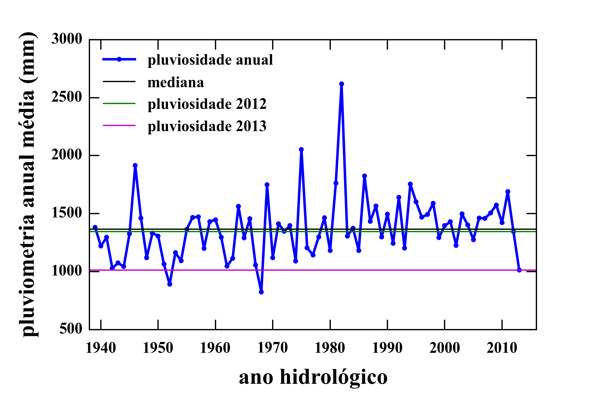
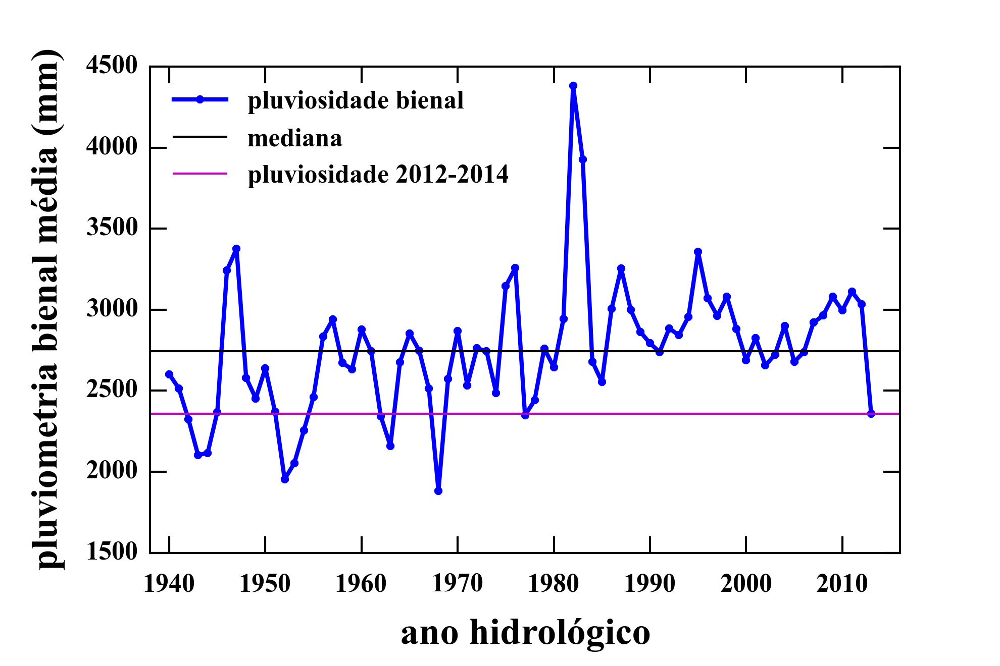
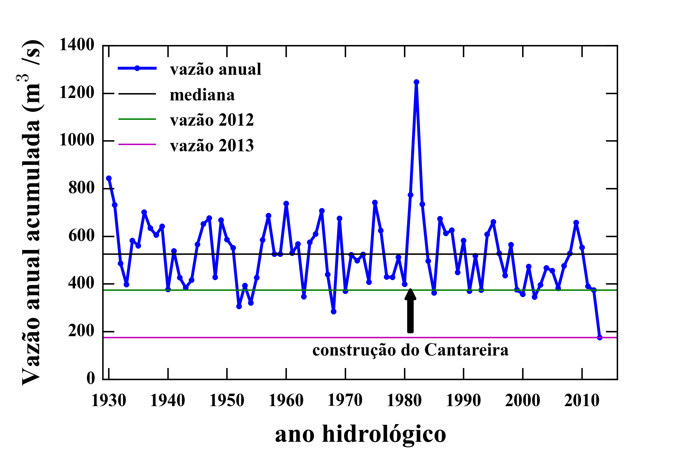

Uma questão candente, discutida publicamente, é o quão seco foi o ano hidrológico1 2013-2014. Foi, de fato, muito excepcional? O presidente da Sabesp afirmou publicamente que “a seca que ocorreu em 2014 só acontece a cada 250 anos”2. Vejamos.

Vamos olhar para a série de pluviosidade na região da Cantareira desde outubro de 19393. Na Figura acima temos a chuva acumulada em cada ano. O último ponto da série é 2013 (outubro/2013 a setembro/2014) . De fato, foi um ano seco. Mas já houve dois anos mais secos e nove anos com chuva acumulada em valores muito próximos aos do ano 2013-2014. Isso quer dizer que, em termos de chuvas, o ano não foi tão excepcional assim. Mais: se considerarmos anos com chuvas iguais ou menores que este ano, temos 3 anos em 75, ou 1 a cada 25 anos, em média.
Tiramos a mesma conclusão analisando a chuva acumulada por biênios. A figura abaixo mostra que houve dez biênios de chuva acumulada menor que a do biênio outubro/2012 a setembro/2014.

Provavelmente, a afirmação de que o ano de 2013-2014 foi o mais seco da história refere-se à quantidade de água que entrou no sistema, a vazão afluente. Olhando a série histórica de vazões afluentes desde 1930 no gráfico abaixo 4, vê-se que o ano 2013/2014 teve valores excepcionalmente pequenos, muito abaixo da mediana e cerca de metade dos valores mínimos típicos, como a de 2012/2013. Ou seja, a afluência foi muito mais anômala que a pluviosidade.

Estes dados mostram que em outros anos pouco chuvosos a vazão não se reduziu tanto. Por quê? Temos que entender como a água da chuva torna-se água armazenada. Nosso modelo e o do CEMADEN levam isto em conta, e podem ser usados como instrumentos de avaliação de riscos hídricos.
Neste ponto, cabe um comentário: o sistema Cantareira entrou em operação parcial em 1973 e foi completado em 1981. Antes disso, as vazões referem-se às dos rios que foram represados. Estes dados são, porém, lacunares, e em parte tiveram que ser reconstruídos. Ou seja, não temos dados seguros de antes de 1981. O que se pode afirmar com certeza é que o ano 2013/2014 foi o mais seco, em termos de vazão e de chuvas, desde que o sistema Cantareira foi completado.
O ano hidrológico vai de outubro de um ano até setembro do ano seguinte.↩
Dados retirados do Sistema de informações hidrológicas Hidroweb da ANA. Tomamos a média de pluviosidade das estações de Americana, Indaiatuba, Itatiba, Martim Francisco, Rio Claro, Vargem e Vinhedo, representativos da bacia PCJ.↩
Dados até 2012 retirados do Estudo para a renovação da outorga do sistema Cantareira. Arquivos da Agência Nacional de Águas. A partir de 2013, os dados foram tomados dos Boletins diários da SABESP de vazão do sistema.↩